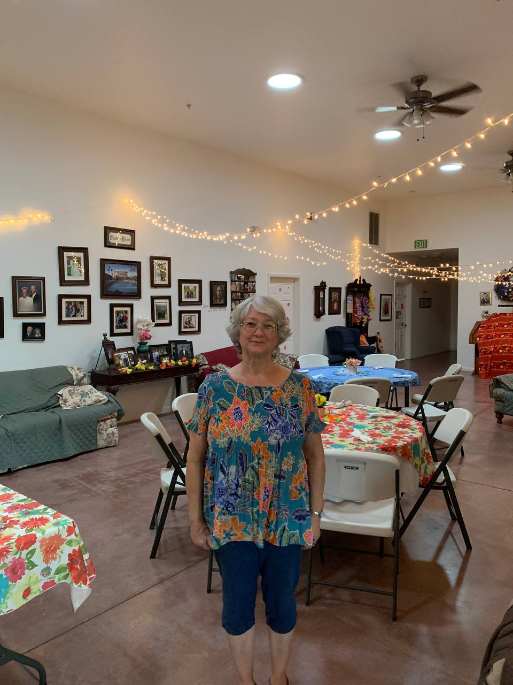
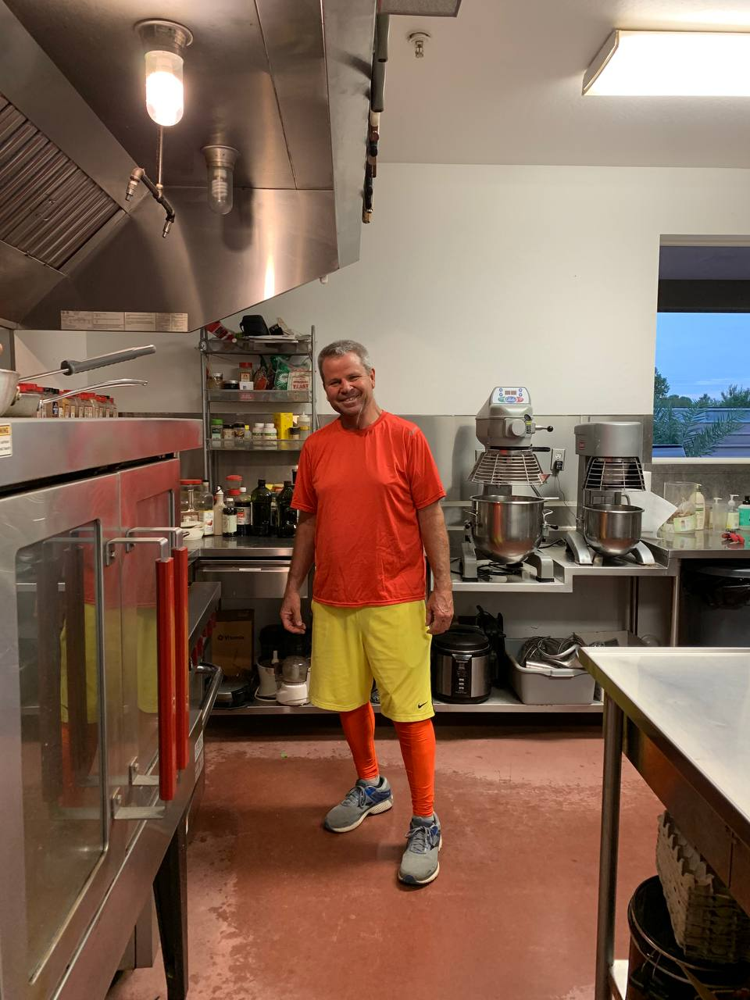

Our Story
Serenade Assisted Living was founded with one goal: create a place where residents feel at home, not institutionalized. We combine personalized care plans with a family-style culture that celebrates everyday life.


Our Philosophy
Every resident has a unique life story. Our team listens closely, learns individual routines, and builds support around personal preferences, health needs, and social comfort.
Our Team
Our caregivers, managers, and hospitality staff are trained to deliver respectful, relationship-centered care. Families can expect clear communication, reliability, and a sincere commitment to wellbeing.